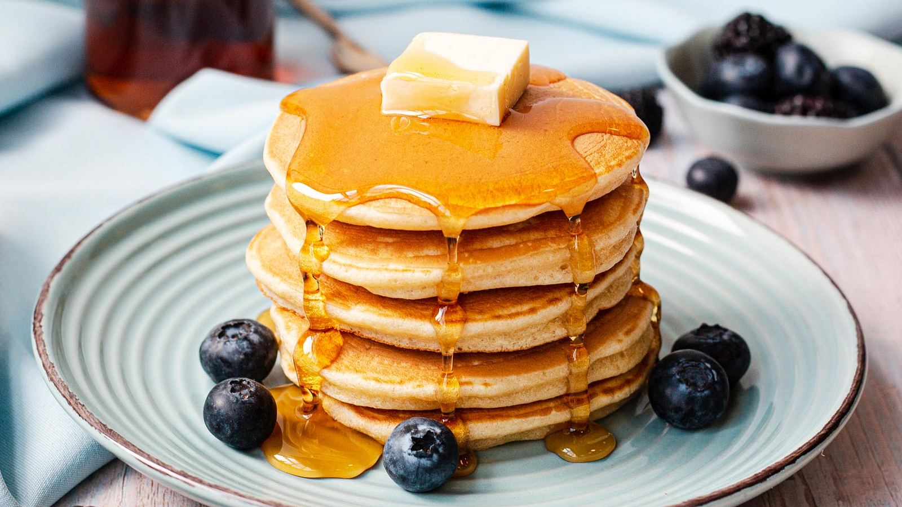

Home
Pancake recipe

American style pancakes
The ingredients:
Flour: This homemade pancake recipe starts with all-purpose flour.
Baking powder: Baking powder, a leavener, is the secret to fluffy pancakes.
Sugar: Just a tablespoon of white sugar is all you'll need for subtly sweet pancakes.
Salt: A pinch of salt will enhance the overall flavor without making your pancakes taste salty.
Milk and butter: Milk and butter add moisture and richness to the pancakes.
Egg: A whole egg lends even more moisture. Plus, it helps bind the pancake batter together.
Steps:
1. Sift the dry ingredients together.
2. Make a well, then add the wet ingredients. Stir to combine.
3. Scoop the batter onto a hot griddle or pan.
4. Cook for two to three minutes, then flip.
5. Continue cooking until brown on both sides.